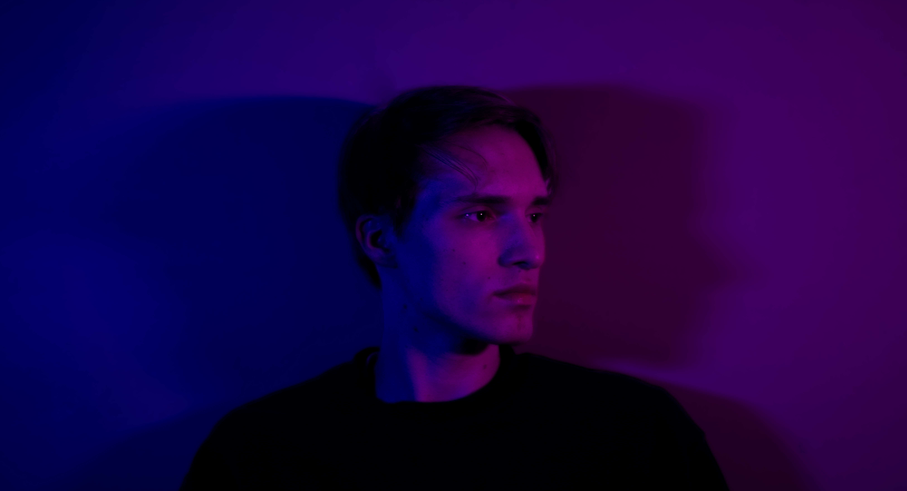

My name is Peter Carr, and I am a 22 year old photographer currently based in Worcester, MA during the school year and Princeton, NJ during the off period. I was raised in the Bronx, NYC, and moved to New Jersey with my family in 2023.
I am currently a junior at Clark Univesity in Worcester, MA, majoring in Media, Culture, and the Arts. I am currently studying ancient Greek art and dramas, photography, and I am taking a business course along with those.
I have four years of experience in photography and Adobe Lightroom, three years in Photoshop, and one year of experience of filmmaking and editing.
Similarly, I have been making content on social media, mostly TikTok, for about three years with my content mostly regarding the LGBTQ+, but also touching on subjects like books and photography.
